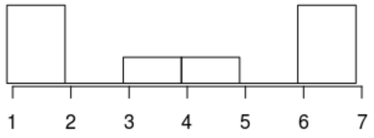
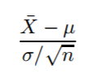
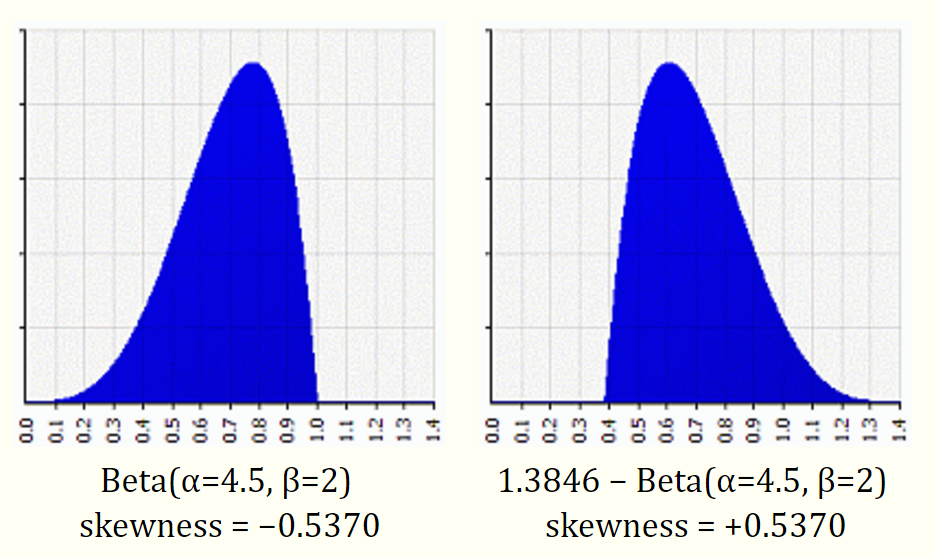
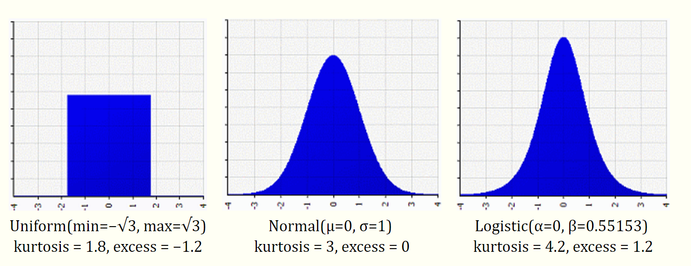

class: center, middle # Central limit theorem CLT # Централна гранична теорема ЦГТ --- ## Четене на данни * txt файлове * Можем да четем .txt файлове, колоните на които са разделени с табулация. Това става с read.table(file) Пример: <table style="width: 100%;"> <tr><td>1</td><td>6 </td><td>a</td></tr> <tr><td>2</td><td>7 </td><td>b</td></tr> <tr><td>3</td><td>8 </td><td>c</td></tr> <tr><td>4</td><td>9 </td><td>d</td></tr> <tr><td>5</td><td>10</td><td>e</td></tr> </table> ```r my_data = read.csv("C:/Desktop/data.csv" , header = TRUE) df = read.table("https://s3.amazonaws.com/assets.datacamp.com/blog_assets/test.txt") df = read.table("...", header=TRUE) ``` header - дали първия ред от csv файла е с имената на колоните! по default e TRUE --- * Четене на csv файлове: read.csv(file). С ключовата дума sep = "," можем да променим разделителя. ```r # Read in csv files df = read.csv("https://s3.amazonaws.com/assets.datacamp.com/blog_assets/test.csv") ``` --- # Сега сериозните неща --- # Central limit theorem --- Да речем, че имаме някакво странно разпределение:  Сега ще взимаме извадки и ще намираме средното на извадките. Т.е. ще гледаме **разпределението на извадковото средно**. --- Примерно: Ще направим експеримент, в който всеки опит се състои да вземем няколко елемента от оригиналното разпределение (т.е. извадка от него) и да намерим някаква характеристика за извадката. За нашия експеримент извадка е средното на n (обикновени) извадки. (sample of n samples) *n = 4 и имаме: s1 = [1, 1, 3, 6] -> x черта = 2.75* *n = 4 и имаме: s2 = [3, 4, 3, 1] -> x черта = 2.75* *n = 4 и имаме: s3 = [1, 1, 6, 6] -> x черта = 3.5* Оказва се, че това разпределение на средни е нормално разпределение. А колкото по-голямо е n, толкова повече ще прилича на нормално разпределение - със същото средно $\mu$ и по-малко стандартно отклонение: $\frac {\sigma}{\sqrt{n}}$. --- http://www.math.uiuc.edu/~ajh/370/408clt.pdf Изводът е следният: Ако имаме разпределения X1,...Xn, които са независими и еднакворазпределени (т.е. с еднакво разпределение) (i.i.d) случайни величини със средно $\mu$ и стандартно отклонение $\sigma$, то разпределението Средното: $X черта = 1/n * \sum_{i=1}^n X_i$ ще има средно $\mu$ и стандартно отклонение $\frac {\sigma}{\sqrt{n}}$ Сумата: $X черта = \sum_{i=1}^n X_i$ ще има средно $n\mu$ и стандартно отклонение $\sigma\sqrt{n}$ От друга страна $\frac {\sigma}{\sqrt{n}}$ се нарича стандартна грешка. --- # Важно! ### Силата на ЦГТ е, че важи за всякакво разпределение - извадките могат да идват от всякакво разпределение (не задължително нормално) и в крайна сметка разпределението на извадковото средно е нормално със редно $\mu$ и стандартно отклонение $\frac {\sigma}{\sqrt{n}}$. --- Пример: На събитие имаме 50 души поканени. Знаем, че средно човек пие 2л. вода, стандартно отклонение 0.7 Каква е вероятността да ни свърши водата, ако имаме 110л? Знаем, че $\mu = 2$, $\sigma = 0.7$ за популацията. Това може да не е нормално разпределение. Водата ще ни свърши, ако средно пият повече от 2.2л т.е. P(sample $\mu$ > 2.2) = ? --- Водата ще ни свърши, ако средно пият повече от 2.2л т.е. P(sample $\mu$ > 2.2) = ? Разпределението на извадковото средно – знаем, че то е нормално разпределено. От връзката знаем, че за разпределението на извадковото средно – нормално, $s\mu = 2$, $s\sigma = \frac{0.7}{\sqrt{50}} = 0.09$. N = 50 в примера. (толкова души) P($s\mu$ > 2.2) = 1 - pnorm(2.2, 2, 0.09) = 0.217 --- ### Друг запис на иначе казаното:  ~ N(0, 1) --- ## Как да проверим дали данните, които имаме, са нормално разпределени? QQ plot – quantile-quantile plot е графичен способ, с който можем да проверим дали разпределение идва от нормално, експоненциално или друго. --- ## Как работи? Чертаем квантилите на нашето разпределение, редом с теоретичните квантилите на нормалното разпределение. В R това става с qqnorm (по-генерално qqplot), а qqline добавя линия, с която още по-лесно да видим в каква степен нашето разпределение се отклонява от нормалното. qqnorm създава normal Q-Q plot – даваме на R вектор от данните, той ги сортира и ги чертаем редом с квантилите на стандартното нормално разпределенеие. (т.е. чертае теоретичните и извадковите квантили). qqline – чертае права, с която да сравним теоретичните и извадковите квантили. --- ### Пример в R: ```r x = rnorm(100,0,1);qqnorm(x,main=’normal(0,1)’);qqline(x) x = rnorm(100,10,15);qqnorm(x,main=’normal(10,15)’);qqline(x) x = rexp(100,1/10);qqnorm(x,main=’exponential mu=10’);qqline(x) x = runif(100,0,1);qqnorm(x,main=’unif(0,1)’);qqline(x) ``` --- ### Нека илюстрираме ЦГТ с пример --- ```r CLT_unif = function(rep, n, a, b){ results = c(); means = c(); for(i in 1:rep) { x = runif(n, a, b); results[i] = (mean(x) - (a + b)/2)/sqrt((b - a)^2/12)*sqrt(n); means = c(means, mean(x)); } qqnorm(results); qqline(results, col = 'red'); } CLT_unif(500, 10, 1, 10); ``` --- Пробвайте да напишете CLT_exp ```r CLT_exp = function(rep, n, lambda){ ... ? ... } ``` --- ```r CLT_exp = function(rep, n, lambda){ z = c(); for(i in 1:rep){ x = rexp(n, lambda); z = c(z, (mean(x) - 1/lambda)*lambda*sqrt(n)); } hist(z, prob=TRUE); z; } CLT_exp(100, 10, 2); CLT_exp(100, 100, 2); ``` --- ```r CLT_binom <- function(rep, n, p) { z = c(); for(i in 1:rep){ # Сума, защото ги считаме за n Бернулиеви експеримента # всеки е със средно p -> n*mu = n*p # всеки е със сд sqrt(p*(1-p)) -> sqrt(n)*sd = sqrt(n)*sqrt(p*(1-p)) = sqrt(n*p*(1-p)) S = rbinom(1,n,p) z = c(z, (S- n*p)/sqrt(n*p*(1-p))) } hist(z, prob=TRUE) return(z) } CLT_binom(1000, 15, 0.4) CLT_binom(1000, 150, 0.4) x = CLT_binom(100, 300000, 0.4) curve(dnorm(x), -4, 3, add=TRUE) ``` --- Същото можем да постигнем със simple.sim, на което му подаваме функция, която прави същото от тялото на for цикъла и аргументите, които ще му трябват (в нашия случай параметрите на разпределението). ```r unif_mean = function(n, a, b){ x = runif(n, a, b); z = (mean(x) - (a + b) / 2)/sqrt((b - a)^2/12)*sqrt(n); qqnorm(z); qqline(z, col = 'red'); return(mean(x)); } sim_first = simple.sim(500, unif_mean, 10, a, b) ``` --- От упражненията знаете, че когато n*p е голямо (np > 5), може да приближим Бернулиевото разпределение с нормално. Демонстрирайте това със симулация, където n = 100, p = 0.25, p = 0.05 и p = 0.01. --- ```r ## Q 7.3 library("UsingR") set.seed(7.3) n = 100 f <- function(n=100, p=.5) { S <- rbinom(1,n,p) (S - n*p)/sqrt(n*p*(1-p)) } S1 <- simple.sim(1000,f,n,.25) S2 <- simple.sim(1000,f,n,.05) S3 <- simple.sim(1000,f,n,.01) par(mfrow=c(1,3), oma=c(0,0,2,0)) hist(S1, col=gray(.9), prob=T, main="S1: p=0.25") lines(density(S1, adjust=2), col="blue") hist(S2, col=gray(.9), prob=T, main="S2: p=0.05") lines(density(S2, adjust=2), col="blue") hist(S3, col=gray(.9), prob=T, main="S3: p=0.01") lines(density(S3, adjust=2), col="blue") ``` --- ## Мерки за „формата“ на разпределението * Skewness * Kurtosis --- ## Skewness Skewness – мярка за симетричността (по-скоро за липсата ѝ). Положителен skew означава, че опашката ни е положителна (разпределението е изместено наляво), отрицателен skew – отрицателна опашка (надясно).  --- ### Как да сравняваме този коефициент на skewness? Правило на палеца: * По-малко от -1 или по-голямо от 1 – силно несиметрично * -1 до -0.5, 0.5 до 1 – средно симетрично * -0.5 до 0.5 може да се каже, че е симетрично. --- Ако искаме да сравним разпределението ни с нормално, то то трябва да е симетрично – да изпълнява последното условие за skew, което споменахме. --- ## Kurtosis Kurtosis – мярка за това дали разпределението ни има тежки, или леки опашки в сравнение с опашките на нормалното разпределение. Висок коефициент означава тежки опашки. (Равномерното разпределение е с безкрайно леки опашки).  --- ```r time <- c(19.09, 19.55, 17.89, 17.73, 25.15, 27.27, 25.24, 21.05, 21.65, 20.92, 22.61, 15.71, 22.04, 22.60, 24.25) # install.packages("moments") library(moments) skewness(time) kurtosis(time) ``` --- # Confidence interval estimations --- ## Confidence interval estimations Много често в статистиката искаме да измерим параметрите на разпределение, което знаем. Можем да знаем, че дадено разпределение е нормално, но не знаем неговото средно или стандартно отклонение. От данните, с които разполагаме можем да направим прогроза за тези параметри с някаква вероятност – да предскажем с някаква вероятност в какъв интервал се намира даден параметър. Пример: с вероятност 95% да кажем, че mu се намира в интервала [a, b]. --- Confidence интервалът с ниво на съгласие 95% ни казва, че в 95% от случаите, когато изчисляваме по този начин параметъра (примерно медиана), този параметър ще попада в този интервал и в 5% от случаите няма да попада. Защо не е ок да търсим винаги интервал с 99% съгласие? Колкото по-голямо съгласие, толкова по-голям става интервалът. Не ни устройва интервал, който е -минус безкрайност, безкрайност. В живота всичко е компромис… --- R разполага със следните инструменти, които правят тестове: prop.test, t.test и wilcox.test Съществуват различни типове тестове, които да намират confidence intervals за нас. Ние ще си говорим за следните: * тестове за пропорции * тестове за средно * тестове за медиана --- ## Тестове за пропорции пример: По тв – интервюирали са 100 души, 20 са казали да → 20% от популацията са казали да. Това не е вярно, тъй като не можем да заключим от извадката такова нещо – трябва да интервюираме цялата популация (а това е невъзможно). ```r prop.test(20,100) prop.test(20,100,conf.level=0.90) ``` --- ```r prop.test(x, n, p = NULL, alternative = c("two.sided", "less", "greater"), conf.level = 0.95, correct = TRUE) ```